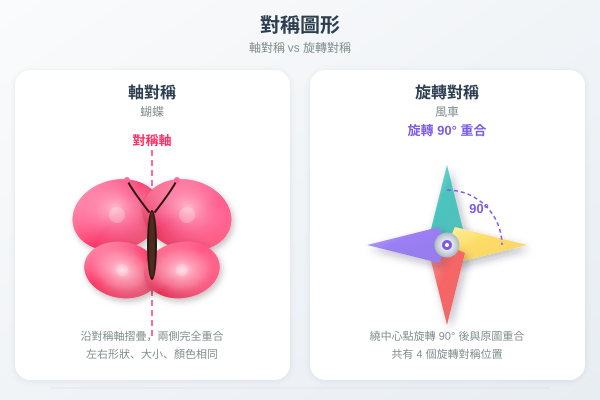

| # | 題目 | 難度 | 作答區 |
|---|---|---|---|
| ✓ 1 | 畫出一個等邊三角形的所有對稱軸。有幾多條？ | 🌱 | |
| ✓ 2 | 一個正方形轉 90° 後同原來一樣嗎？咁轉 180° 呢？ | 🌱 | |
| ✓ 3 | 以下邊個英文字母有對稱軸？A、B、C、D | 🌱 | |
| ✓ 4 | 一個圖形旋轉半圈（180°）後同原來一樣，叫咩對稱？ | 🌿 | |
| ✓ 5 | 正方形有幾多個旋轉對稱？每個旋轉角係幾多度？ | 🌿 |
| # | 題目 | 難度 | 作答區 |
|---|---|---|---|
| ✓ 6 | 以下圖形各有幾多條對稱軸？A. 正方形 B. 長方形 C. 等邊三角形 | 🌱 | |
| ✓ 7 | 畫出一個等腰三角形的對稱軸。有幾多條？ | 🌱 | |
| ✓ 8 | 正五邊形有幾多條對稱軸？旋轉對稱次數係？ | 🌱 | |
| ✓ 9 | 一個圖形旋轉 120° 和 240° 後同原來一樣，有幾多次旋轉對稱？ | 🌱 | |
| ✓ 10 | 以下邊個圖形有旋轉對稱？A. 長方形 B. 等腰三角形 C. 不等邊三角形 | 🌱 | |
| ✓ 11 | 一個圖形只有 1 次旋轉對稱（轉 360° 先一樣），呢個圖形有冇旋轉對稱？ | 🌱 |
| # | 題目 | 難度 | 作答區 |
|---|---|---|---|
| ✓ 12 | 菱形有幾多條對稱軸？有幾多次旋轉對稱？ | 🌿 | |
| ✓ 13 | 正六邊形有幾多條對稱軸？每次旋轉幾多度會同原來一樣？ | 🌿 | |
| ✓ 14 | 平行四邊形有冇對稱軸？旋轉 180° 後同原來一樣嗎？ | 🌿 | |
| ✓ 15 | 一個風車圖案有 4 片葉，旋轉幾多度會同原來一樣？ | 🌿 | |
| ✓ 16 | 一個圖形既有 2 條對稱軸又有 2 次旋轉對稱（180°）。呢個圖形可能係？ | 🌳 |
| # | 題目 | 難度 | 作答區 |
|---|---|---|---|
| ✓ 17 | 等腰梯形有幾多條對稱軸？有冇旋轉對稱？ | 🌳 | |
| ✓ 18 | 一個數字「8」有冇軸對稱？有幾多條？有冇旋轉對稱？ | 🌳 | |
| ✓ 19 | 在格點圖上畫一個三角形，頂點為 (1,1)、(5,1)、(3,4)。以 y=3 為對稱軸畫鏡像。 | 🌳 | |
| ✓ 20 | 一個四邊形有 2 次旋轉對稱但冇軸對稱，呢個係咩四邊形？ | 🌳 | |
| ✓ 21 | 解釋：一個圖形可唔可以有 5 次旋轉對稱但冇軸對稱？試舉例。 | 🌳 |
| # | 題目 | 難度 | 作答區 |
|---|---|---|---|
| ✓ 22 | 一個規則八邊形有幾多條對稱軸？幾多次旋轉對稱？每次旋轉角係幾多？ | 🏔️ | |
| ✓ 23 | 設計一個同時具有 4 條對稱軸和 4 次旋轉對稱的四邊形圖案，畫在格點圖上。 | 🏔️ |
| # | 題目 | 難度 | 作答區 |
|---|---|---|---|
| ✓ H1 | 畫出等邊三角形的所有對稱軸。有幾多條？ | 🌱 | |
| ✓ H2 | 正方形有幾多條對稱軸？畫出來。 | 🌱 | |
| ✓ H3 | 正六邊形有幾多次旋轉對稱？ | 🌱 | |
| ✓ H4 | 一個圖形旋轉 60° 後同原來一樣，有幾多次旋轉對稱？ | 🌱 | |
| ✓ H5 | 長方形有冇旋轉對稱？如有，旋轉角係？ | 🌿 | |
| ✓ H6 | 菱形有幾多條對稱軸？畫出來。 | 🌿 | |
| ✓ H7 | 一個圖形既有 2 次旋轉對稱又有 2 條對稱軸，可能係咩形狀？ | 🌿 | |
| ✓ H8 | 在格點圖上畫一個四邊形（頂點自選），以 x=0 為軸畫鏡像。 | 🌿 | |
| ✓ H9 | 解釋：點解平行四邊形冇軸對稱但有旋轉對稱？ | 🌳 |
| # | 題目 | 難度 | 作答區 |
|---|---|---|---|
| ✓ H10 | 正八邊形有幾多條對稱軸？有幾多次旋轉對稱？ | 🌳 | |
| ✓ H11 | 一個風車有 6 片葉均勻排列，旋轉幾多度會一樣？有冇對稱軸？ | 🌳 | |
| ✓ H12 | 在格點圖上，將三角形 (0,0)、(4,0)、(2,3) 以原點為旋心逆時針旋轉 90°。寫出新頂點坐標。 | 🌳 | |
| ✓ H13 | 一個圖形有 3 次旋轉對稱和 3 條對稱軸，邊長全部相等。呢個係咩形狀？ | 🌳 | |
| ✓ H14 | 自行設計一個同時具有軸對稱和旋轉對稱的圖案（至少 3 條對稱軸）。畫在紙上。 | 🏔️ |
| # | 易錯點（❌ 陷阱） | 正確做法（✅） |
|---|---|---|
| 1 | 對稱軸數量記錯 | 正方形 4 條、長方形 2 條、菱形 2 條、等邊三角形 3 條、正 n 邊形 n 條。背熟！ |
| 2 | 旋轉角計錯 | 旋轉角 = 360° ÷ 旋轉次數。旋轉 4 次 → 90°；旋轉 3 次 → 120°。 |
| 3 | 軸對稱 vs 旋轉對稱混淆 | 軸對稱 = 摺疊重合（線對稱）；旋轉對稱 = 旋轉重合（點對稱）。兩者可以共存。 |
| 4 | 所有圖形旋轉 360° = 回原位 | 所有圖形轉 360° 都是自己。所以最少旋轉對稱次數 = 1。 |
| 5 | 對稱軸方向必定係垂直？ | 錯！對稱軸可以是水平、垂直或任何斜度。長方形的 2 條對稱軸是垂直和水平穿過中心。 |
| 6 | 平行四邊形有軸對稱？ | 錯！一般平行四邊形（非菱形）冇軸對稱。只有 2 次旋轉對稱（180°）。 |
| 7 | 旋轉中心和旋轉角確認不準 | 在格點圖繪製旋轉對稱時，確認旋轉中心位置和旋轉角度（順/逆時針）。每點獨立旋轉。 |